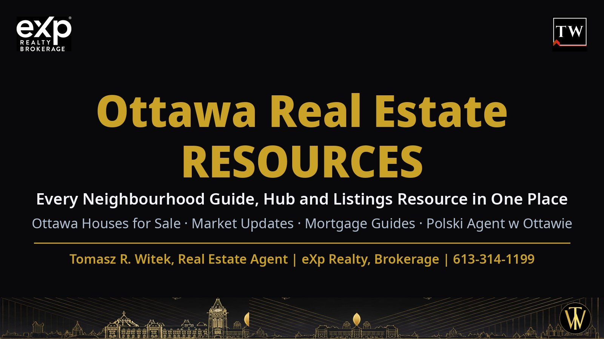

Every guide, hub and resource on sellingottawa.realestate in one place — Ottawa houses for sale, neighbourhood guides, market updates, mortgage and rates help, buying and selling guides, new construction, senior moves, Polish-language services and agent resources. Written and maintained by Tomasz R. Witek, Real Estate Agent with eXp Realty, Brokerage. This page is refreshed weekly — new guides are added as they publish.
Neighbourhood Guides
Ottawa Neighbourhood Guides — directory
Every neighbourhood guide on the site in one directory, starting with Barrhaven's 11 areas.
Ottawa Neighbourhood Guides — hub
How to choose an Ottawa neighbourhood: schools, transit, housing stock and prices compared.
Barrhaven Neighbourhood Guide, Ottawa
The complete Barrhaven guide — all 11 sub-areas compared, with live listings and prices updated daily.
Pheasant Run Neighbourhood Guide (7701)
Established Barrhaven streets near Fallowfield — homes, schools and live listings.
Knollsbrook Neighbourhood Guide (7702)
Quiet crescents by the Jock River side of old Barrhaven — guide and live listings.
Cedargrove and Fraserdale Neighbourhood Guide (7703)
Mature lots and renovated homes in Barrhaven's original neighbourhoods.
Heritage Park Neighbourhood Guide (7704)
The Golden Standard guide — housing stock history, prices and live listings.
On the Green Neighbourhood Guide (7705)
Stonebridge golf-course living on Barrhaven's south side — freehold guide and listings.
Longfields Neighbourhood Guide (7706)
Family streets around Longfields-Davidson Heights school — guide and live listings.
Hearts Desire Neighbourhood Guide (7707)
Jock River trails and newer freeholds in Barrhaven's southwest — guide and listings.
Stonebridge Neighbourhood Guide (7708)
Trails, golf and the Jock River — Stonebridge homes and live listings.
Strandherd Neighbourhood Guide (7709)
Barrhaven's shopping and transit corridor — homes, condos and live listings.
Barrhaven East Neighbourhood Guide (7710)
Chapman Mills and the Greenbelt edge — guide and live listings.
Half Moon Bay Neighbourhood Guide (7711)
Riverside crescents in Barrhaven's newest southwest community — guide and listings.
Kanata Ottawa Real Estate: Homes for Sale Guide
Kanata homes for sale, prices and the full area guide.
Emerald Meadows Trailwest Kanata: New Homes Guide
Kanata's new-homes community guide — builders, homes and live listings.
Greenboro Ottawa Real Estate: Homes for Sale Guide
Greenboro homes for sale, prices and neighbourhood guide.
Nepean Ottawa Real Estate: Homes for Sale Guide
Nepean homes for sale and area guide — Barrhaven's parent community.
eXp Realty Brokerage Model Explained
Fed Up With Your Brokerage: How eXp Realty Actually Works (2026)
The agent-attraction hub — caps, splits, stock and revenue share, honestly explained.
Agent Attraction at eXp Realty, Brokerage (Resources)
The agent resource page — the #Exp613 lead generation system and how to join.
eXp Realty Revenue Share Explained: The 7-Tier System (2026)
All seven revenue-share tiers with the verified numbers.
Best Brokerage for New Real Estate Agents (2026)
The honest eXp Realty guide for new licensees.
New Agent — Free Lead Generation Program Request
New agents: request the free #Exp613 lead generation program.
Existing Agent — Free Lead Generation Program Request
Existing agents: request the free #Exp613 lead generation program.
Barrhaven Houses for Sale and Rent
Barrhaven Real Estate — homes for sale and market stats
Search every Barrhaven home for sale with area market statistics.
Barrhaven Houses for Rent: Freehold Rental Guide
The rental hub — freehold rentals across Barrhaven, updated daily.
Pheasant Run Houses for Rent (7701)
Freehold rentals in Pheasant Run — live listings and rental guide.
Knollsbrook Houses for Rent (7702)
Freehold rentals in Knollsbrook — live listings and rental guide.
Cedargrove Fraserdale Houses for Rent (7703)
Freehold rentals in Cedargrove and Fraserdale — live listings and rental guide.
Heritage Park Houses for Rent (7704)
Freehold rentals in Heritage Park — live listings and rental guide.
On the Green Houses for Rent (7705)
Freehold rentals in On the Green and Stonebridge — live listings and rental guide.
Longfields Houses for Rent (7706)
Freehold rentals in Longfields — live listings and rental guide.
Market, Mortgage and Money
Ottawa Real Estate Market Updates
The market hub — monthly Ottawa sales, prices and what they mean for you.
Ottawa Home Sales September 2026: Buyer's Market Returns
The latest monthly market update from the Market Updates hub.
Ottawa Mortgage & Rates Guide
The mortgage hub — rates, pre-approval, and financing guides for Ottawa buyers.
Ottawa Mortgage Rates October 2026: What Buyers Should Know
The latest rates update from the Mortgage & Rates hub.
Renting vs Buying in Ottawa: The 2026 Numbers
The honest math on renting versus buying in Ottawa right now.
Canada Foreign Buyer Ban Expires January 1, 2027
What Ottawa buyers and sellers must know before the ban lifts.
Buying, Selling and New Construction
Buying & Selling in Ottawa
The buying and selling hub — step-by-step guides for both sides of the move.
Buying New Construction in Ottawa: Model Home Tour Guide
The new-construction hub — model homes, builders, deposits and the mistakes to avoid.
Buying a Condo in Downtown Ottawa: A Buyer's Guide
Condo fees, status certificates and downtown buildings — the Ottawa condo buying guide.
Condo Living in Ottawa: Benefits & Lifestyle Guide
What condo living in Ottawa is actually like — costs, amenities and lifestyle.
Ottawa Real Estate Agent FAQ: 21 Questions Answered
Fees, timelines, offers and more — answered by Tomasz R. Witek.
Seniors and Downsizing
Seniors Downsizing in Ottawa: A Real Client Story
From family home to retirement residence — how one Ottawa downsizing actually went.
Polish — Polski agent w Ottawie
Polski Agent w Ottawie (Resources)
Polish-language real estate services in Ottawa — the Polish resource page.
Polski Agent Nieruchomości w Ottawie | Tomasz R. Witek
The Polish hub — buying, selling and settling in Ottawa, in Polish.
Polacy w Ottawie: życie, domy i Polonia
Polish life in Ottawa — community, homes and Polonia.
Polski agent nieruchomości w Ottawie – usługi
Polish-language services for buyers and sellers in Ottawa.
Jak pomóc agentowi znaleźć dom dla rodziny
How to help your agent find your family's home — in Polish.
Parafia Świętego Jacka w Ottawie
St. Hyacinth Polish Parish — history of the parish and Polish parishes in Canada (in Polish).
Polish Parishes Across Canada and the Ottawa Church Built by Soldiers
The English edition of the St. Hyacinth parish history.
Polish Communities in Montreal and Ottawa
Polish communities in Canada's two closest Polish centres, compared.
About and Contact
About Me: Tomasz R. Witek — From Poland to Ottawa
My immigration story and 20+ years selling Ottawa homes since 2005.
Blog — all posts
Every article on sellingottawa.realestate, newest first.
Resources — all resource pages
The full Resources listing: Polish services, Agent Attraction and this master list.
Book a Call with Tom
Prefer to talk it through? Book a time that suits you — buying, selling, or joining eXp Realty.